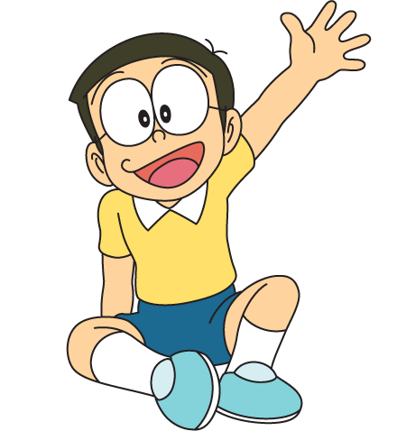

โนบิตะ
ข้อมูลทั่วไป
- อายุ : ประมาณ 9-12 ปี
- วันเกิด : 7 สิงหาคม 2507
- เพศ : ชาย
- เผ่าพันธ์ : มนุษย์
อุปนิสัย
- อุปนิสัย : ใจดี, เป็นมิตร, มีจิตใจเมตตา, ชอบเข้าสังคม, ขี้ขลาด, อ่อนแอ
- เรื่องที่สนใจ : เล่นพันด้าย,นอนกลางวัน
- สิ่งที่เกลียด : การบ้าน,การสอบ
- ความสามารถพิเศษ : แม่นปืน,เล่นพันด้าย
ความสัมพันธ์
- พ่อแม่ : โนบิ โนบิสุเกะ (พ่อ)
โนบิ ทามาโกะ (แม่) - สัตว์เลี้ยง : เปโร,พิโกะ
- คนรัก : โนบิ โนบิตะ
- เพื่อน : โนบิ โนบิตะ, โดราเอมอน, โฮเนคาว่า ซึเนะโอะ, ไจแอนท์, เดคิสุงิ ฮิเดโทชิ, โกดะ ไจโกะ, ซึวะ กังโกะ, ลูน่า (เพื่อนสนิท)